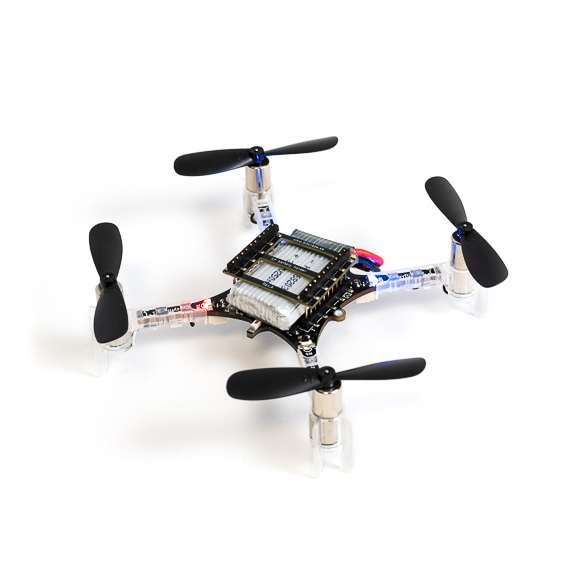
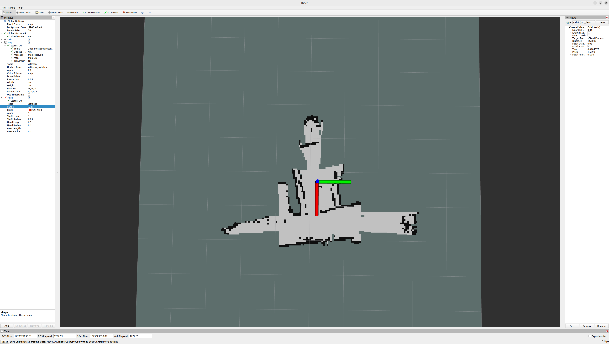
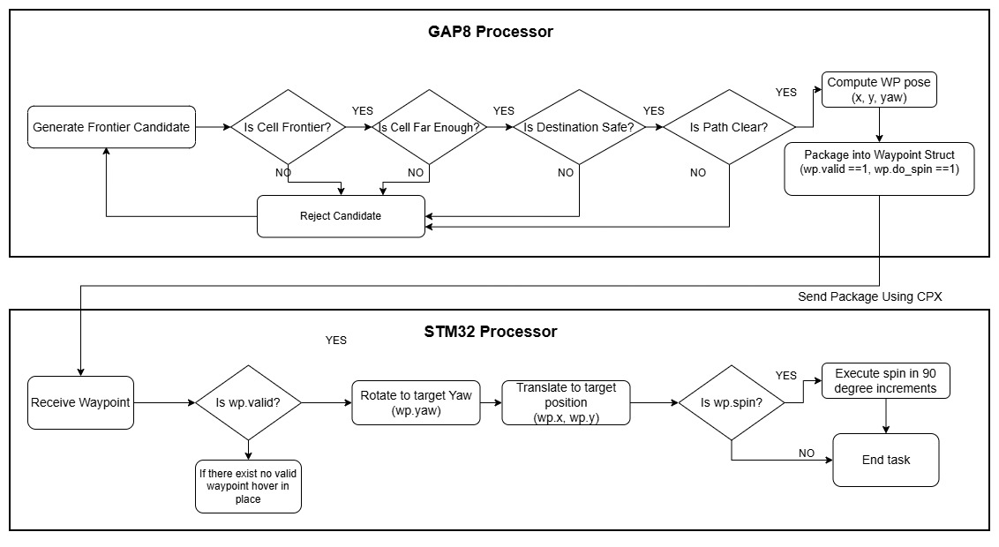

An eight-month undergraduate thesis project implementing a fully onboard mapping and autonomous exploration system for the Bitcraze Crazyflie 2.1 nano quadrotor. The system builds a real-time 2D log-odds occupancy grid entirely on the GAP-8 RISC-V processor, no offboard compute, no external positioning infrastructure, and no ground station in the loop. Sensor data from five time-of-flight ranging modules is packaged by the STM32 flight controller and streamed to the GAP-8 over a custom inter-processor communication layer. The GAP-8 runs Bresenham ray casting to update a 200×200 occupancy grid within its 512KB L2 RAM budget, then executes a frontier-based exploration algorithm to autonomously identify unexplored regions and generate navigation waypoints. All while streaming compressed map deltas over WiFi to a ROS2 visualizer in real time. The project was motivated by NanoSLAM and C-SLAM, two nano-UAV SLAM frameworks out of ETH Zurich, and serves as a hardware foundation for future work toward fully decentralized multi-agent swarm mapping.


Left: Crazyflie 2.1 Platform · Right: real-time occupancy map output
Technical Architecture
The platform combines the Crazyflie 2.1 (27g nano-quadrotor with STM32F405 controller) with three expansion decks: Flow Deck v2 for optical flow and altitude, Multi-ranger Deck with five VL53L1x ToF sensors for sparse range measurements in cardinal directions, and AI Deck 1.1 featuring a GAP-8 parallel processor (8+1 RISC-V cores, 512 KB L2 SRAM) plus ESP32 for WiFi telemetry. Both the onboard STM32 and GAP-8 run custom firmware, with the STM32 handling flight control and sensor interfacing, while the GAP-8 executes the SLAM pipeline and exploration logic. Both firmware are built on a RTOS framework for task scheduling and inter-MCU communication, with the STM32 acting as the master and GAP-8 as a coprocessor for mapping and decision-making.
The system implements occupancy grid SLAM with 5 cm cell resolution (200×200 grid = 10m×10m map). ToF readings are transformed from drone body frame to world frame using SE(2) rigid transforms, then ray-cast into the grid using Bresenham line tracing. Each cell uses log-odds representation (int8) to accumulate confidence from sensor hits and free-space inference, eliminating noise spikes that plagued binary approaches.
Data flows across three interfaces: SPI between STM32 and GAP-8 for high-bandwidth sensor packets, SPI from the GAP-8 to the ESP32, which then transmits UART/WiFi via the Crazyflie Packet eXchange (CPX) protocol for inter device routing. A manual multiplexing layer was implemented to work around the STM32's static routing table, embedding type tags in payloads to distinguish sensor scans from navigation waypoints without modifying core flight firmware.
Frontier-based exploration identifies unknown cells adjacent to free space, then filters candidates by minimum distance (0.8m), obstacle clearance (6 cells safe radius), and line-of-sight path validation. The drone autonomously flies to selected frontiers, performs fixed-duration spins to densify maps, and repeats until no valid frontiers remain.
Key constraint: 512 KB of GAP-8 L2 SRAM with no MMU or dynamic allocator. Every data structure required manual memory layout and sizing—from occupancy grid (40 kB) to IPC buffers to ray-casting scratch space. This constraint shaped every algorithmic decision.

Flow chart of exploration algorithm
Challenges & What I Learned
The Multi-ranger deck's five single-zone ToF sensors produce only 4–5 points per scan (excluding the upward-facing sensor), compared to 64 points per sensor from more capable platforms. Dense ICP scan matching, which assumes significant geometric overlap, becomes unreliable. This necessitated relaxing convergence criteria and adding spatial validation checks to frontier selection—corners where scans don't sufficiently overlap can create false-positive frontier candidates.
The 512 KB L2 RAM budget meant every kilobyte mattered. Early designs storing log-odds as float32 left insufficient headroom for IPC buffers, forcing a switch to int8—compressing the confidence scale to ±100 but saving 36 KB. Map row "dirty" flags reduced WiFi bandwidth by 80%, eliminating redundant transmissions. The GAP-8 has no virtual memory or dynamic allocation; all structures required compile-time sizing and manual memory layout.
The stock ESP32 WiFi bridge using TCP-like handshaking frequently crashed under the sustained SPI data rate from the GAP-8. High-frequency packet loss stalled the flight control loop. This was resolved by switching to a community-developed optimized firmware using lightweight UDP, Zero-Copy buffers, and async I/O—eliminating blocking entirely and ensuring reliability under continuous streaming.
The greedy frontier selection can trap the drone in local minima where it's surrounded by explored areas but no valid frontier candidates remain within collision-safe bounds. Future improvements could include potential field-based navigation, RRT-based path planning for distant unexplored regions, or cost functions accounting for battery depletion.